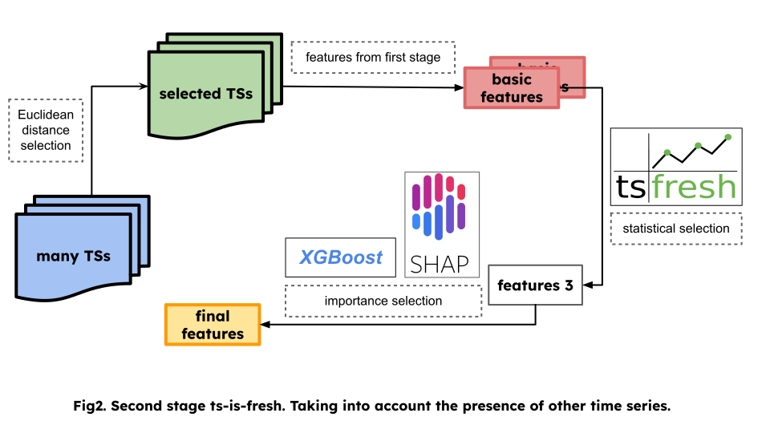

Algorithm
Preprocessing
First of all, for ease of working with time series, we quantize its values over a certain interval within which we
want to trust the predictions. In our case it is 300ms. When quantizing, we use various aggregation functions that
allow us to preserve information about the original time series.
This part is solved with the function preprocessing_utils.quantize_table().
The basic version of the algorithm - working with a single time series

Statistical selection.
Since we want to generate statistical features using the tsfresh library, we need to take some windows for each
point of the time series (some number of nearest points of the time series from the past). In each such window we can
read a huge number of different functions (statistics of different criteria, asymmetry measures, quantiles, medians,
and so on).
After that, using statistical criteria, we will select among the constructed features only those that have great statistical significance in predicting the target value. This will allow us to narrow the dimensionality of the feature space for the first time (in practice, from about 800 to 100-200 features).
This part is solved with the function extraction_utils.bcv_extract_features().
Since there are still not enough signs selected by statistical methods, it was decided to get the feature importance
and select the features with the highest values with the help of XGBR models.
Selection of uncorrelated features.
Note that we cannot use feature importance right away - we may have highly correlated features. The importance will
be evenly distributed between such features, and we can randomly discard them. Since tsfresh computes a large
number of similar features with different hyperparameters, we are bound to have correlated features! To combat this,
we factorize all the features into the functions from which they were derived. And within each class we leave only the
representative with the highest p_value. After that we will count feature importance on the remaining
representatives.
Statistical significance is obtained using method selection_utils.get_stats(), and the selection of the best
uncorrelated features using selection_utils.stats_select_features().
Importance based selection.
On the selected uncorrelated features, we will train several XGBR models. Then for each of them we will count 6
types of feature importance (including shap values). By normalizing and averaging the obtained values, we can rank
the features according to their importance. By selecting features whose total importance reaches 80%, we get
the final set!
This part is solved with the functions selection_utils.get_importance(),
selection_utils.importance_select_features().
Advanced version of the algorithm - take into account the context
{kind=link}
In practice, a large number of currencies are always traded, we can take this information into account! Of course, we will not be able to take into account all currencies - the growth in the number of parameters is too large. So it was decided to select 10 currencies that have the highest correlation with the target currency. In our case, correlation is the Euclidean distance between vectors of % price changes.
After that, for each of the currencies, we calculated the features that were selected for the target currency in the previous step. Combined the information obtained into one large table. And again started the cycle of work with one time series. at the output, we get features selected statistically and with the help of importance, calculated both for the target currency and for others!